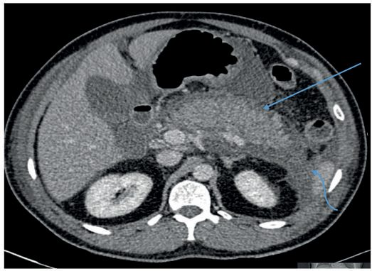
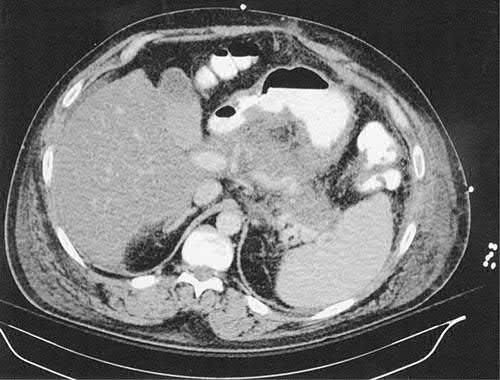
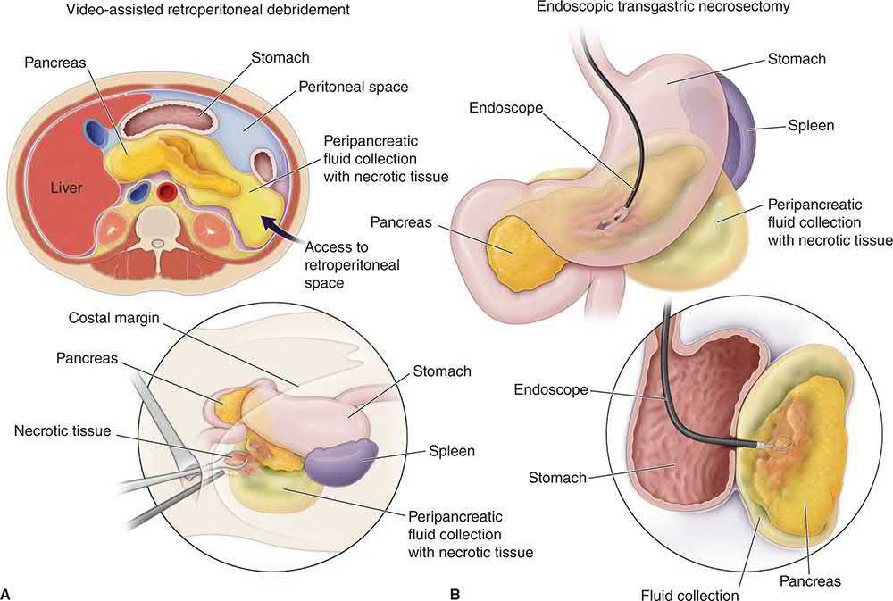
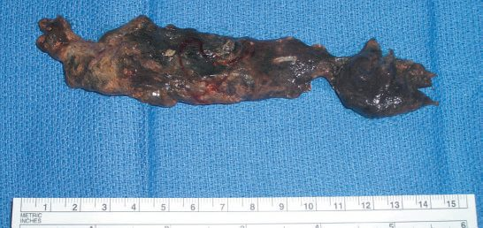

Acute Pancreatitis
Summary
- Acute pancreatitis (AP) is responsible for more than 300,000 hospital admissions annually in the United States, and its incidence has risen over the past 20 years [1].
- In the UK it accounts for 3% of all admissions with abdominal pain, at a hospital admission rate of 9.8 per 100,000 population per year, against a worldwide annual incidence of 5 to 50 per 100,000 [2].
- Most patients have a mild, self-limited course, but 10–20% develop a rapidly progressive inflammatory response with significant morbidity and mortality; mortality is under 1% in mild disease but 10–50% in severe disease [1].
- Gallstones and alcohol account for 70–80% of cases in the West [1].
- Management is largely supportive (fluid resuscitation, analgesia, early enteral nutrition), reserving intervention for complications such as infected necrosis [1].
- NICE NG104 covers acute and chronic pancreatitis in one guideline.
- Its acute section is deliberately short (15 recommendations) because the committee restricted itself to questions where the evidence supported a recommendation.
- There is no NICE recommendation on severity scoring, on the timing of ERCP, or on the timing of cholecystectomy in acute pancreatitis, all of which the textbooks treat at length [3].
NG104 also carries an unusually specific set of things to tell patients with severe acute pancreatitis: that a hospital stay lasting several months is relatively common, including time in critical care; that for those who achieve full recovery, recovery may take at least three times as long as the hospital stay; that local complications may resolve spontaneously or may take weeks to progress before it is clear intervention is needed; that it may be safer to delay intervention, for example to let a fluid collection mature; that people who have started to recover may relapse; and that although children rarely die from acute pancreatitis, approximately 15% to 20% of adults with severe acute pancreatitis die in hospital [3].
Definition
- Acute pancreatitis is an acute inflammatory process of the pancreas resulting from premature intra-acinar activation of digestive enzymes, producing local autodigestion and a variable systemic inflammatory response [1][4].
- Per the Revised Atlanta Classification, the diagnosis requires at least two of: (1) abdominal pain consistent with pancreatitis, (2) serum amylase or lipase greater than three times the upper limit of normal, or (3) characteristic imaging findings [1][4].
- Bailey & Love states the same definition as an acute condition presenting with abdominal pain, a threefold or greater rise in serum amylase or lipase, and/or characteristic findings of pancreatic inflammation on contrast-enhanced CT; acute pancreatitis may recur [2].
Acute and chronic as phases of one process
Pancreatitis divides into acute, which presents as an emergency, and chronic, a prolonged and frequently lifelong disorder resulting from fibrosis within the pancreas, and it is possible the two are different phases of the same process [2]. The acute disease itself has an early phase lasting about a week, characterised by SIRS which if severe leads to transient or persistent organ failure (persistent if lasting over 48 hours), and a late phase running from weeks to months in those who suffer a severe attack, characterised by persistent systemic inflammation and/or local complications, particularly fluid collections and peripancreatic sepsis [2].
Pathophysiology
- The precise mechanism by which predisposing factors such as ethanol and gallstones trigger pancreatitis is incompletely understood, but most evidence points to abnormal intra-acinar activation of pancreatic enzymes [1].
- Colocalisation of zymogen granules and lysosomes within acinar cells allows lysosomal cathepsin B to activate trypsinogen; activated trypsin then causes leakage of these organelles, releasing cathepsin B into the cytosol, where it induces acinar cell apoptosis or necrosis [1].
- Anything that injures the acinar cells and impairs secretion of zymogen granules, or damages the duct epithelium and so delays enzymatic secretion, can trigger the process [2].
- This intra-acinar enzyme activation causes autodigestion of pancreatic parenchyma, with release of pro-inflammatory cytokines (TNF-α, IL-1, IL-2, IL-6) and anti-inflammatory mediators (IL-10); recruited neutrophils and macrophages further amplify local injury and, in severe cases, cause pancreatic necrosis and haemorrhage [1].
- Maingot's names the local mediators as oxygen-derived free radicals together with IL-1, IL-6, IL-8, TNF-α and platelet-activating factor, and it is these that transform a local inflammatory response into a systemic illness [5].
Inflammatory mediators released systemically drive the systemic inflammatory response syndrome (SIRS), with sepsis, renal failure and acute lung injury contributing to early mortality (within the first 2 weeks); late mortality (after 2 weeks) is more often due to septic complications, particularly infected pancreatic necrosis [1]. About one-third of deaths occur in the early phase from multiple organ failure, and deaths after the first week are often septic [2].
Which enzyme causes which complication
The ABSITE Review maps specific systemic complications onto specific released enzymes: ARDS relates to the release of phospholipases, coagulopathy to the release of proteases, and pancreatic fat necrosis again to phospholipases [6]. The fat necroses themselves are small islands of saponification produced when liberated lipase splits fat into glycerol and fatty acids, the free fatty acids then combining with calcium to form soaps, which is also the mechanism of the hypocalcaemia [2].
- For gallstone pancreatitis, two theories are proposed: the obstructive theory, in which continued pancreatic secretion against an obstructed duct raises intraductal pressure, and the reflux theory, in which an ampullary stone allows bile-salt reflux into the pancreatic duct causing direct acinar necrosis [1].
- Where the biliary and pancreatic ducts join to share a common channel before the ampulla, obstruction of that passage may allow reflux of bile or activated enzymes into the pancreatic duct, and patients with small gallstones and a wide cystic duct may be at higher risk of passing stones in the first place [2].
- Alcohol has multifaceted deleterious effects, including upregulation of pro-inflammatory pathways (NF-κB, TNF-α, IL-1), abnormal zymogen exocytosis, activation of pancreatic stellate cells, increased oxidative stress, and a shift from apoptotic to necrotic cell death [1].
- The proposed mechanisms for alcoholic pancreatitis also include diet, malnutrition, direct alcohol toxicity, concomitant tobacco smoking, hypersecretion, duct obstruction or reflux, and hyperlipidaemia [2].
Clinical features
- The cardinal symptom is constant epigastric or periumbilical pain radiating to the back, accompanied by nausea or vomiting in up to 90% of patients; if the pain resolves or diminishes, an alternative diagnosis should be considered [1][4].
- The pain characteristically reaches maximum intensity within minutes rather than hours and persists for hours or even days, is severe, constant and refractory to usual doses of analgesia, radiates to the back in about 50% of patients, and may be relieved by sitting or leaning forwards [2].
- Nausea, repeated vomiting and retching are usually marked, and the retching may persist despite the stomach being kept empty by nasogastric aspiration; hiccoughs from gastric distension or diaphragmatic irritation can be troublesome [2].
A great mimic
- The suddenness of onset may simulate a perforated peptic ulcer; pain maximal in the right upper quadrant mimics biliary colic or acute cholecystitis; radiation to the chest can simulate myocardial infarction, pneumonia or pleuritic pain.
- Acute pancreatitis can mimic most causes of the acute abdomen and should seldom be discounted in the differential diagnosis [2].
- A dilated loop of small bowel adjacent to the inflamed pancreas (the sentinel loop) is a recognised radiographic accompaniment [6].
- Dehydration, tachycardia and hypotension are common, and severe/elderly patients may develop mental status changes [1].
- Body temperature is often normal or even subnormal at first, rising as inflammation develops; mild icterus can be caused by biliary obstruction in gallstone pancreatitis, while an acute swinging pyrexia suggests cholangitis [2].
- Abdominal examination ranges from mild epigastric tenderness in mild disease to generalised rebound and rigidity in severe disease; the severity of clinical findings does not always correlate with the degree of pancreatic inflammation [1].
- There is usually guarding in the upper abdomen, although marked rigidity is unusual, and an inflammatory epigastric mass may develop [2].
- A pleural effusion is present in 10–20% of patients, and pulmonary oedema and pneumonitis are also described [2].
Ecchymotic signs and their rarity
- Rare but important findings include flank ecchymosis (Grey Turner's sign) and periumbilical ecchymosis (Cullen's sign), both indicating retroperitoneal haemorrhage in severe pancreatitis and typically appearing several days after onset, caused by pancreatic enzymes tracking along the falciform ligament (to the umbilicus) or retroperitoneally to the flank [1][4][7].
- Inguinal ecchymosis is described as Fox's sign [6].
- Maingot's is careful to deflate these: they are rare in all but the most severe cases, are non-specific, and may be seen with any cause of retroperitoneal bleeding [5].
- Subcutaneous fat necrosis may produce small, red, tender nodules on the skin of the legs [2].
Jaundice may occur with concomitant choledocholithiasis or a swollen pancreatic head compressing the intrapancreatic bile duct, and pleural effusion (usually left-sided) may cause dullness and reduced breath sounds [1].
Etiology
- Gallstones and alcohol account for 70–80% of cases in the West; gallstone pancreatitis is the single most common cause (about 40% of US cases, occurring in 3–8% of patients with symptomatic gallstone disease), and alcohol accounts for roughly 35% [1][4].
- Bailey & Love gives biliary calculi in 50–70% of patients and alcohol abuse in 25% [2].
- Other causes include anatomic/ductal obstruction (pancreas divisum, tumours, parasites), post-ERCP pancreatitis (occurring in up to 5% of all ERCPs, up to 15% in high-risk patients), drug-induced pancreatitis (sulfonamides, metronidazole, thiazides, statins, azathioprine, valproic acid, and others), hypertriglyceridaemia (typically at levels >1000 mg/dL, confirmed above 2000 mg/dL) and hypercalcaemia (seen in 1.5–13% of patients with primary hyperparathyroidism), trauma, and idiopathic causes [1][4].
- Idiopathic causes should represent no more than 20% of cases [2][4].
The full aetiological list
| Category | Causes |
|---|---|
| Metabolic | Alcohol; hyperlipoproteinaemia; hypercalcaemia; drugs; genetic; scorpion venom |
| Mechanical | Cholelithiasis; postoperative; pancreas divisum; post-traumatic; retrograde pancreatography; duct obstruction by pancreatic tumour or Ascaris; pancreatic ductal bleeding; duodenal obstruction |
| Vascular | Postoperative after cardiopulmonary bypass; periarteritis nodosa; atheroembolism |
| Infection | Mumps; Coxsackie B; cytomegalovirus; Cryptococcus |
Table reproduces the classification of aetiological factors [5]. Bailey & Love adds ampullary tumour, hyperparathyroidism, sphincter of Oddi dysfunction, autoimmune pancreatitis, hereditary pancreatitis, malnutrition, and pancreatitis following biliary, upper gastrointestinal or cardiothoracic surgery [2].
Quantifying the common causes
Choledocholithiasis is the commonest of the known mechanical factors, and most patients with non-alcohol-related pancreatitis have gallstones, many of whom develop recurrent attacks if the stones persist [5]. At least 1% of patients undergoing ERCP develop clinically detectable pancreatitis [5]; Bailey & Love gives 1–3%, with higher risk in sphincter of Oddi dysfunction, a history of recurrent pancreatitis, and after sphincterotomy or balloon dilatation [2].
- The alcohol threshold is worth knowing precisely.
- Signs and symptoms usually appear only after 10 years or more of heavy ingestion, and development is thought to relate to consumption of over 4 to 5 drinks per day for more than 5 years; binge drinking has not been related to pancreatitis [5].
- Smoking, once considered merely a cofactor in alcohol-related disease, is now recognised as an independent risk factor with risk correlating to the extent of tobacco use [5].
- In approximately 10% of cases no underlying cause is identified, and occult biliary microlithiasis has been suggested as the aetiology in most idiopathic cases [5].
- Obesity is the most important risk factor for necrotising pancreatitis specifically [6], and a body mass index over 30 raises the risk of complications [2].
Hereditary pancreatitis is a rare familial condition associated with mutations of the cationic trypsinogen gene; patients tend to suffer acute pancreatitis in their teens, progress to chronic pancreatitis over the next two decades, and carry a risk possibly as high as 40% of developing pancreatic cancer by the age of 70 [2]. Pancreatitis without an obvious cause should raise concern about malignancy [6].
NICE opens the acute section with a warning against premature closure: do not assume that a person's acute pancreatitis is alcohol-related just because they drink alcohol [3]. Where gallstones and alcohol have been excluded, other possible causes should be investigated, metabolic causes such as hypercalcaemia or hyperlipidaemia, prescription drugs, microlithiasis, hereditary causes, autoimmune pancreatitis, ampullary or pancreatic tumours, and anatomical anomalies such as pancreas divisum [3].
People with pancreatitis caused by alcohol should be advised to stop drinking; those with recurrent acute or chronic pancreatitis that is not alcohol-related should be advised that alcohol might nonetheless exacerbate their pancreatitis [3].
Diagnosis
- Diagnosis requires two of the three Revised Atlanta Classification criteria (pain, enzyme elevation, imaging) [1].
- Serum lipase is more specific than amylase (which can be elevated in peptic ulcer disease, parotitis, cholecystitis, mesenteric ischaemia and renal failure) and has a longer half-life (6.9–13.7 hours vs 10 hours for amylase), making it more useful when presentation is delayed beyond 24–48 hours [1].
- A normal serum amylase does not exclude the diagnosis, particularly with delayed presentation [2].
- Mild elevations of amylase and lipase are also seen with cholecystitis, perforated ulcer, sialoadenitis, small bowel obstruction and intestinal infarction [6], and hyperamylasaemia occurs with ovarian tumours and renal failure [5].
Enzyme levels diagnose but do not prognosticate. Both amylase and lipase peak within the first 24 hours; simultaneous measurement of both only marginally improves diagnosis; and absolute levels have no correlation with severity [5]. Bailey & Love frames the workup as three questions: is the diagnosis correct, how severe is the attack, and what is the aetiology [2].
- Ultrasound should always be obtained given its 95% sensitivity for detecting gallstones as the underlying cause; the combination of elevated transaminases, elevated pancreatic enzymes and gallstones on ultrasound gives a sensitivity of 97% and specificity of 100% for acute biliary pancreatitis [1][4].
- Ultrasound does not establish the diagnosis of pancreatitis itself, but should be performed within 24 hours in all patients to detect gallstones, exclude acute cholecystitis as a differential, and determine whether the common bile duct is dilated [2].
- Plain films are not diagnostic but are useful in the differential, showing non-specific findings such as a generalised or local ileus (sentinel loop), a colon cut-off sign and a renal halo sign, occasionally with calcified gallstones or pancreatic calcification.
- A chest radiograph may show a pleural effusion or, in severe cases, diffuse alveolar interstitial shadowing suggesting ARDS [2].
CT: what it shows and when to do it
Contrast-enhanced CT is the best modality for pancreatic parenchymal evaluation but is not required for diagnosis, its main roles are confirming severity, assessing complications, and evaluating cases of diagnostic uncertainty or clinical deterioration [1][4]. Bailey & Love gives four specific indications: diagnostic uncertainty; severe acute pancreatitis, to distinguish interstitial from necrotising disease; organ failure, signs of sepsis or progressive deterioration; and suspicion of a localised complication such as a fluid collection, pseudocyst or pseudoaneurysm [2].
The parenchymal findings are quantitative. From a baseline of 30 to 50 Hounsfield units, viable pancreas typically enhances by more than 50 HU with intravenous contrast, while non-viable pancreas does not enhance at all; necrosis is diagnosed by non-enhancement of more than 30% of the parenchyma, or an area greater than 3 cm that does not enhance [5].
- Timing matters more than the scan.
- CT performed early often fails to identify developing local complications, because necrosis may only become evident 2 to 3 days after symptom onset, which significantly limits its utility at admission; sensitivity for identifying necrosis approaches 100% after 4 days from diagnosis [5].
- In the first 72 hours CT may underestimate the extent of necrosis [2].
- It is therefore advisable to obtain a contrast CT in patients who do not improve after several days of conservative management, repeating it with signs of deterioration [5].
- MRI can be used where there is moderate renal impairment or contrast allergy, with comparable sensitivity and specificity, though it is less practical in the critically ill [5].
Diagnosing infection within necrosis
- Clinical criteria do not separate severe pancreatitis from infected necrosis, leukocytosis, fever and organ failure occur with or without infection [5].
- Emphysematous pancreatitis, gas within the pancreatic parenchyma, is diagnostic of infection but uncommonly seen; when present, debridement is indicated without further confirmation [5].
- Otherwise image-guided aspiration of the necrotic pancreas is highly accurate, with a sensitivity of 96%, specificity of 99%, positive predictive value of 99.5% and negative predictive value of 95%; samples go for aerobic, anaerobic and fungal culture, and in most patients a positive Gram stain suffices without waiting for culture [5].
- Infection accrues over time.
- In one study infection was documented in 49% of patients in the first 14 days but in less than 15% diagnosed after 35 days, and infection can appear later even after a prior negative aspirate, in one series the first aspirate was positive in 17 of 30 patients (57%), while 23% required two or more procedures and 20% required three or more [5].
- Fine-needle aspiration should not be performed in the absence of suspected infection, because of the small risk of introducing infection into a previously sterile collection [5].
MRCP has a role in evaluating unexplained or recurrent pancreatitis for anatomic causes such as pancreas divisum or occult neoplasm [1]. EUS is useful for identifying persistent choledocholithiasis in gallstone pancreatitis without the risk of exacerbating pancreatitis that routine ERCP carries [1].


Scoring and Severity
- Several scoring systems predict severity and guide management. Ranson's criteria (1974) use 11 parameters, five assessed on admission and six at 48 hours; a score of 3 or more defines severe pancreatitis.
- For non-gallstone pancreatitis, admission criteria are age >55 years, WBC >16,000/mm³, glucose >200 mg/dL, LDH >350 IU/L, and AST >250 U/L; 48-hour criteria are haematocrit fall >10%, BUN rise >5 mg/dL, calcium <8 mg/dL, base deficit >4 mEq/L, fluid sequestration >6 L, and PaO₂ <60 mmHg.
- For gallstone pancreatitis the thresholds differ slightly (e.g. age >70, WBC >18,000/mm³, glucose >220 mg/dL) [1][9].
- The Ranson score has a low positive predictive value (50%) but a high negative predictive value (90%), and cannot be completed until 48 hours after admission [1].
- In Ranson's original report, 5 or 6 positive signs carried 40% mortality with a prolonged intensive care course in half of patients, while 7 or 8 signs carried nearly 100% mortality [5][6].
Ranson against Glasgow
The Glasgow score is the system in wider use in the UK. Both classify disease as severe when three or more factors are present [2].
| Ranson score | Glasgow score (within 48 hours) |
|---|---|
| On admission: age >55 years | Age >55 years |
| WBC >16 × 10⁹/L | WBC >15 × 10⁹/L |
| Blood glucose >11 mmol/L (>200 mg/dL) | Blood glucose >10 mmol/L, no history of diabetes |
| LDH >350 units/L | LDH >600 units/L or AST >200 units/L |
| AST >250 units/L | Serum urea >16 mmol/L, no response to intravenous fluids |
| Within 48 hours: haematocrit fall of 10% or greater | PaO₂ <8 kPa (60 mmHg) |
| Blood urea nitrogen rise >5 mg/dL (1.8 mmol/L) despite fluids | Serum calcium <2.0 mmol/L |
| PaO₂ <8 kPa (60 mmHg) | Serum albumin <32 g/L |
| Serum calcium <8 mg/dL (2.0 mmol/L) | Not applicable |
| Base deficit >4 mmol/L | Not applicable |
| Fluid sequestration >6 litres | Not applicable |
Table reproduces the two scoring systems side by side [2]. Severity stratification should be performed at 24 hours, 48 hours and 7 days after admission, and regardless of the system used, persisting organ failure indicates a severe attack [2].
- The APACHE II score can be calculated on admission and repeated at any time; a score ≥8 defines severe pancreatitis, with positive and negative predictive values of 43% and 89% respectively [1].
- Maingot's is blunter about all of these: scoring systems requiring 48 hours are poor predictors of disease severity, and updates to APACHE incorporating obesity (APACHE-O) or further variables (APACHE III) have proven non-specific with high false-positive rates, are unwieldy, and are not commonly used in practice [5].
- Other intensive-care systems applied to pancreatitis include SAPS, SOFA, MODS and the modified Marshall score, the last having the advantage of simplicity [2].
- The BISAP score (2008) uses five bedside criteria (elevated BUN, altered mental status, SIRS, age >60, and pleural effusion within 24 hours) with mortality risk ranging from <1% to >20% [1]. C-reactive protein ≥150 mg/dL at 48–72 hours defines severe disease [1]; its rise at 48 hours identifies severe disease with better sensitivity and specificity than other markers, although its delayed peak at 36 to 72 hours makes it useless on admission [5].
- Haemoconcentration predicts parenchymal necrosis and organ failure, and persistence of haemoconcentration and azotaemia despite fluid resuscitation predicts severe disease [5].
- The Balthazar CT Severity Index (CTSI) combines the grade of pancreatic inflammation (0–4 points) with the extent of necrosis (0–6 points): a score of 0–3 carries 3% mortality/8% morbidity, 4–6 carries 6%/35%, and 7–10 carries 17%/92% [1]. SIRS criteria (≥2 of: temperature >38.3°C or <36.0°C, heart rate >90/min, respiratory rate >20/min or PaCO₂ <32 mmHg, WBC >12,000 or <4,000/mL or >10% bands) are increasingly favoured as a fast, inexpensive bedside tool; persistent SIRS, transient SIRS, and never meeting SIRS criteria correlate with mortality of 25%, 8%, and 0% respectively [1].
The two classifications of severity
The 2012 revised Atlanta Classification defines mild pancreatitis as no organ failure or complications, moderate as organ failure lasting <48 hours and/or local/systemic complications, and severe as organ failure persisting beyond 48 hours [1][2][4]. The competing Determinant-Based Classification, derived from a meta-analysis, adds a fourth tier by incorporating necrosis: mild is no pancreatic or peripancreatic necrosis and no organ failure; moderate is sterile necrosis and/or transient organ failure; severe is infected necrosis or persistent organ failure; and critical is infected necrosis and persistent organ failure [5].
The Atlanta morphological classification distinguishes interstitial oedematous pancreatitis (acute peripancreatic fluid collection before 4 weeks, evolving into a pseudocyst thereafter) from necrotising pancreatitis (acute necrotic collection before 4 weeks, evolving into walled-off necrosis, WON, thereafter) [1].
| Revised Atlanta term | Definition |
|---|---|
| Interstitial oedematous pancreatitis | Acute inflammation of the pancreatic parenchyma and peripancreatic tissues without tissue necrosis |
| Necrotising pancreatitis | Inflammation associated with pancreatic parenchymal and/or peripancreatic necrosis |
| Acute peripancreatic fluid collection (APFC) | Peripancreatic fluid with interstitial oedematous pancreatitis, no associated necrosis; applies in the first 3 weeks and without the features of a pseudocyst |
| Pancreatic pseudocyst | Encapsulated fluid collection with a well-defined inflammatory wall, usually outside the pancreas with minimal or no necrosis; usually more than 4 weeks after onset |
| Acute necrotic collection (ANC) | Collection containing variable amounts of fluid and necrosis in necrotising pancreatitis; necrosis may be parenchymal and/or peripancreatic |
| Walled-off necrosis (WON) | Mature encapsulated collection of pancreatic and/or peripancreatic necrosis with a well-defined inflammatory wall; usually more than 4 weeks after onset |
Table reproduces the revised morphological definitions [5]. One consequence of the redefinition is that "pseudocyst" is now applicable far less often, being reserved for collections whose content is entirely fluid; the term "pancreatic abscess" has been abandoned altogether, because it fails to distinguish an infected acute fluid collection from an infected pseudocyst, an infected acute necrotic collection, or infected walled-off necrosis [10].
- NICE defines only two of the three Atlanta tiers, and does so by reference to the revised Atlanta classification rather than restating it.
- Moderately severe acute pancreatitis is characterised by organ failure that resolves within 48 hours (transient organ failure), or local or systemic complications in the absence of persistent organ failure.
- Severe acute pancreatitis is characterised by single or multiple organ failure persisting for more than 48 hours [3].
Those two definitions carry weight because they gate the nutrition recommendations: enteral nutrition is offered to anyone with severe or moderately severe disease, which in practice means anyone with organ failure of any duration or any local or systemic complication [3]. NICE makes no recommendation on which prognostic score to use, and does not endorse Ranson, Glasgow, APACHE II, BISAP or CRP.
Treatment and Management
- The cornerstones of treatment, regardless of cause or severity, are aggressive isotonic crystalloid fluid resuscitation, early nutrition, and pain control [1][4].
- Lactated Ringer's solution may be preferred over normal saline for initial resuscitation given an association with a lower incidence of SIRS at 24 hours [1][5].
- The 2022 WATERFALL trial found that a moderate fluid resuscitation strategy caused less fluid overload than an aggressive strategy without a significant difference in progression to moderately severe/severe disease [1].
- Volume depletion accounts for the haemoconcentration and azotaemia of severe pancreatitis; resuscitation is particularly important in the initial 24 hours, at rates often exceeding 200 mL/h, and patients with inadequate resuscitation have an increased risk of developing necrosis [5].
- All patients need close assessment of fluid balance including urinary catheterisation, with severe disease admitted to intensive care for continuous monitoring [5].
- Bailey & Love's early management of severe acute pancreatitis adds supplemental oxygen with serial arterial blood gases, and close monitoring of haematocrit, clotting profile, blood glucose, calcium and magnesium [2].
- Morphine is traditionally avoided on the grounds that it contracts the sphincter of Oddi and may worsen the attack [6].
Nutrition, and the end of "pancreatic rest"
- Enteral nutrition, started within 24–72 hours, is strongly preferred over total parenteral nutrition, reducing death, organ failure and systemic infection rates in severe disease; TPN is reserved for patients unable to tolerate enteral feeding [1][9].
- Historically enteral feeding was withheld to provide "pancreatic rest", on the belief that it would exacerbate inflammation by stimulating exocrine function; nasogastric tubes were used to avoid pancreatic stimulation, though no data support nasogastric decompression in the absence of ileus [5].
- Enteral nutrition supports intestinal mucosal integrity and avoids the altered barrier function and permeability seen with TPN, and meta-analyses confirm it reduces complications, infection and length of stay [5].
- Bailey & Love states flatly that there is little physiological justification for keeping patients on a prolonged nil-by-mouth regimen, and no data support "resting" the pancreas by feeding only parenterally or nasojejunally [2].
- Three practical points follow.
- In mild disease, oral feeding can be started even before pain resolves or enzyme levels normalise, and a low-fat diet is safe soon after admission [5].
- Early nasoenteric feeding has not been shown to be superior to waiting 2 to 3 days to see whether oral feeding is tolerated [5].
- And although most studies used nasojejunal feeding, randomised trials and a meta-analysis show nasogastric or postpyloric feeding is equivalent, with no evidence supporting elemental or immune-enhanced formulas over standard ones [5].
Antibiotics: a genuine disagreement between textbooks
- Prophylactic antibiotics do not reduce the frequency of surgical intervention, infected necrosis, or mortality and are not routinely recommended; antibiotics are reserved for a documented or strongly suspected infection [1].
- Maingot's reaches the same conclusion from the trial data: two more recent randomised studies considered definitive showed no reduction in mortality or intervention with imipenem and no impact on infection, intervention rate or mortality with meropenem, and meta-analyses confirm no reduction in mortality, intervention rate or pancreatic infection.
- Earlier trials were criticised for high antibiotic use in control arms, poor accrual, small numbers and poorly defined inclusion criteria [5].
- The practice also promotes antibiotic-resistant bacterial and fungal infection, and antibiotics should be discontinued whenever no infection is documented [5].
- Bailey & Love takes a different line: there is some evidence to support prophylactic antibiotics in severe acute pancreatitis but no consensus, the rationale being prevention of local and other septic complications, with regimens including intravenous cefuroxime, imipenem, or ciprofloxacin plus metronidazole, and a duration not exceeding 14 days [2].
- Its table of early management for severe disease lists prophylactic antibiotics as something that "can be considered" [2].
- The ABSITE Review reserves antibiotics (imipenem preferred) for severe pancreatitis, failure to improve, suspected infected pancreatitis, or aspiration showing organisms [6].
- If cholangitis or concomitant respiratory or urinary infection is present, antibiotics should be given promptly regardless [2].
ERCP and cholecystectomy
- Routine early ERCP is not indicated for acute biliary pancreatitis regardless of severity, since biliary obstruction is usually transient; ERCP is reserved for patients who develop cholangitis or have persistent biliary obstruction demonstrated on imaging [1].
- Two randomised trials showed reduced morbidity without reduced mortality from routine ERCP, but both were criticised for including patients with known obstruction and cholangitis, and a later multicentre study that excluded patients with biliary obstruction showed increased complications and mortality in the ERCP arm [5].
- ERCP is therefore not indicated in the absence of jaundice, without evidence of duct stones and a dilated duct on imaging, in mild acute gallstone pancreatitis, or as a diagnostic test before cholecystectomy [5].
- Bailey & Love sets a definite window: where gallstones cause an attack of predicted or proven severe pancreatitis, or the patient has jaundice, cholangitis or a dilated common bile duct, ERCP should be carried out within 72 hours of symptom onset, since sphincterotomy and duct clearance reduce infective complications, with sphincterotomy or a stent for those with cholangitis [2].
- The ABSITE Review's threshold for ERCP is clinical cholangitis, bilirubin above 3, or a stone seen on imaging [6].
- Laparoscopic cholecystectomy is indicated for essentially all patients with mild acute biliary pancreatitis, ideally performed during the index admission to reduce the 30% risk of recurrent disease if left untreated [1][2][9].
- Readmission rates for gallstone disease of up to 18% are documented in patients discharged without cholecystectomy, and a randomised trial showed cholecystectomy within 48 hours of admission shortened hospital stay compared with waiting for resolution of pain, without increasing complications or mortality [5].
- For severe pancreatitis, cholecystectomy is generally delayed for at least 6 weeks to allow inflammation to settle [1][4], and specifically where there are fluid collections or pseudocysts, so those can resolve or mature [6].
- Where comorbidity prevents surgery, ERCP with sphincterotomy is the alternative risk-reduction strategy: one prospective study showed recurrent gallstone disease fell from 37% to 0% with sphincterotomy, and a systematic review showed all biliary events fell from 24% to 10% when patients not undergoing cholecystectomy had sphincterotomy before discharge [5].
Managing local complications
- Management of local complications follows a "delay wherever possible" principle: sterile necrotic collections generally do not require intervention unless there is persistent pain, failure to improve, or symptomatic obstruction.
- Suspected or confirmed infected necrosis with clinical deterioration is a clear indication for intervention, but even then intervention should be delayed to allow the collection to become walled off [1][5].
- Recent evidence from the POINTER trial supports antibiotics with delayed drainage over immediate drainage for infected necrotising pancreatitis, since over a third of patients managed with delay avoid drainage altogether [1].
- Early surgical debridement is an independent predictor of poor outcome in necrotising pancreatitis, so expedited intervention is reserved for systemic sepsis or haemodynamic instability, with antibiotics and conservative management otherwise allowing the inflammatory process to organise [5].
- One consequence of accepting that infected necrosis does not demand urgent intervention is that diagnostic fine-needle aspiration is now needed far less often, since patients with suspected infection are increasingly managed with antibiotics and supportive care while the collection walls off [5].
- Walled-off necrosis in the absence of symptoms does not require intervention regardless of the size of the collection.
- Symptomatic walled-off necrosis is characterised by pain, intestinal or biliary obstruction, and later infection, and in one series about 10% of patients with sterile necrosis underwent surgery for persistent pain and organised necrosis at a mean of 29 days from presentation [5].
- Acute fluid collections are rarely symptomatic, usually remain sterile and resolve spontaneously, and drainage risks introducing infection into a sterile collection, there is no role for diuretics, peritoneal lavage, or operative treatment of an acute peripancreatic fluid collection [10].
Data support managing complications of acute pancreatitis at high-volume centres capable of offering the full multidisciplinary complement of care [5].
NICE makes four recommendations on acute management, and two of them contradict long-standing surgical teaching.
- Nil by mouth is the wrong default.
- Ensure that people with acute pancreatitis are not made nil-by-mouth and do not have food withheld unless there is a clear reason, for example vomiting [3].
- This is a positive instruction not to withhold food, phrased so that a nil-by-mouth order has to be justified rather than assumed.
- It sits directly against the "NPO, NG tube" formulation that persists in North American revision texts.
Prophylactic antimicrobials are prohibited outright. Do not offer prophylactic antimicrobials to people with acute pancreatitis [3]. This resolves in the negative the disagreement between the textbooks, Bailey & Love allows that prophylaxis "can be considered" in severe disease while Sabiston and Maingot's advise against it. NICE does not qualify by severity.
On nutrition, enteral feeding is offered to anyone with severe or moderately severe acute pancreatitis, started within 72 hours of presentation, aiming to meet nutritional requirements as soon as possible; parenteral nutrition is offered only if enteral nutrition has failed or is contraindicated [3]. For fluid resuscitation itself NG104 defers to the NICE guidelines on intravenous fluid therapy in hospital rather than making a pancreatitis-specific recommendation [3].
- The order of intervention for infected necrosis is reversed relative to the textbooks.
- NICE offers an endoscopic approach for managing infected or suspected infected pancreatic necrosis when anatomically possible, and a percutaneous approach only when an endoscopic approach is not anatomically possible [3].
- The step-up approach as validated by PANTER and described in the textbooks begins with percutaneous catheter drainage and escalates to video-assisted retroperitoneal debridement.
- NICE puts endoscopy first and makes percutaneous drainage the fallback, decided on anatomy rather than on failure of a previous step.
- The one point of agreement is the timing principle: when deciding how to manage infected necrosis, balance the need to debride promptly against the advantages of delaying intervention [3].
Finally, NG104 sets a referral trigger. If a person develops necrotic, infective, haemorrhagic or systemic complications of acute pancreatitis, seek advice from a specialist pancreatic centre within the referral network and discuss whether to move the person to the specialist centre for treatment of those complications; for children, seek advice from a paediatric gastroenterology or hepatology unit as well as a specialist pancreatic centre [3].
Surgeries
Historically, open surgical debridement (necrosectomy) was the only intervention for infected pancreatic necrosis, performed via a midline or bilateral subcostal incision, approaching the pancreatic bed through the gastrocolic ligament or transverse mesocolon, with blunt (finger) dissection of necrotic tissue followed by closed-suction drainage, continuous lavage, or open packing [1][5]. Mortality after open necrosectomy has historically been as high as 25–30%, and outcomes are strongly time-dependent: mortality is 75% if performed within the first 14 days, falling to 45% at 15–29 days and 8% after 30 days, reinforcing the principle of delayed intervention [1].
Operative detail and the argument about the mesocolon
- Approaching the pancreatic bed through the transverse mesocolon avoids the dense inflammatory process obscuring the planes between stomach and transverse colon, though others argue against it in order not to expose the inframesocolic space to infection [5].
- Debridement is accomplished bluntly with finger dissection of tissue that separates easily, since overzealous removal causes haemorrhage; all fluid and tissue goes for aerobic and anaerobic culture, and complete removal may require access to both paracolic gutters, the pararenal spaces, the retroperitoneum into the pelvis, and the gastrohepatic omentum [5].
- Where the body and tail are primarily involved, a retroperitoneal approach through a left flank incision may be more appropriate; tissues are friable, blunt dissection is preferable to sharp, and a feeding jejunostomy is a useful adjunct, with cholecystectomy included if gallstones precipitated the attack [2].
Because further necrotic tissue forms after the first necrosectomy, four strategies are described, none proven superior to the others [2]:
| Strategy | Description |
|---|---|
| Closed continuous lavage (Beger) | Tube drains left in and the raw area flushed |
| Closed drainage | Incision closed, cavity packed with gauze-filled Penrose drains and closed suction drains; Penrose drains brought out through the flank and slowly pulled out and removed after 7 days |
| Open packing | Incision left open, cavity packed, returning to theatre at regular intervals to repack until a clean granulating cavity remains |
| Closure and relaparotomy (Bradley) | Incision closed with drains, with planned relaparotomies every 48–72 hours until the raw area granulates |
- Table reproduces the four described approaches [2].
- The last two make greater logistic demands, committing the team to re-exploration every 48–72 hours [2].
- Several indications for open debridement remain: collections inaccessible to image-guided techniques because of overlying abdominal structures, multifocal collections, and collections persisting after minimally invasive necrosectomy, in all cases with surgery delayed as long as possible, which itself facilitates atraumatic debridement [5].
The step-up approach and its components
- The "step-up" approach, validated by the Dutch Pancreatitis Study Group (PANTER trial), begins with percutaneous catheter drainage (PCD), escalating to video-assisted retroperitoneal debridement (VARD), using a retroperitoneal dorsal lumbotomy approach with a serially dilated tract for endoscope/laparoscope access, only if percutaneous drainage fails to control sepsis.
- This reduces long-term complications (exocrine/endocrine insufficiency) and morbidity compared with primary open necrosectomy, and roughly one-third of patients are managed with catheter drainage alone [1][5].
- In the PANTER trial catheter drainage reduced morbidity with equal mortality compared with surgical necrosectomy [5].
- A cohort of 639 patients with pancreatic or peripancreatic necrosis from the same group put the figures in context: 62% were treated conservatively with 7% mortality, against 27% mortality in the 38% who required intervention, and of those requiring intervention 35% needed only catheter drainage [5].
- Percutaneous catheters are placed under CT or ultrasound guidance by a transperitoneal or retroperitoneal route; multiple catheters may be needed, with repeat procedures to place new or larger catheters up to 30 Fr [5].
- Solid pancreatic debris was traditionally thought too thick for drains alone, yet a systematic review of 11 studies found successful management with catheters alone in over 50% of patients, and other studies show an approximately 50% success rate whether the necrosis is sterile or infected [5].
- One significant advantage of percutaneous drainage is the opportunity to address symptomatic or infected necrosis before walled-off necrosis has developed [5].
Video-assisted retroperitoneal debridement is limited by the diameter of its access, so several interventions may be needed for complete drainage, though few patients then require laparotomy; patients with necrosis extending medially or inferior to the mesentery may not be optimal candidates [5]. Laparoscopic debridement may be more successful than other minimally invasive methods at removing all necrotic material and minimises wound complications, but carries some risk of further peritoneal infection with pneumoperitoneum and is technically challenging [5].
- Direct endoscopic necrosectomy, approaching the collection transgastrically or transduodenally with an endoscopic snare after serial dilation, achieves resolution of walled-off necrosis in up to 91% of patients in some series, with lower rates of pancreatic fistula, organ failure and postprocedural inflammation compared with surgical necrosectomy [1][5].
- In that 6-centre series only 4% subsequently required surgical debridement, while other reviews suggest 76% definitive resolution with a median of 4 sessions [5].
- Not every patient is a candidate: collections must be walled off and adjacent to the gastric or duodenal lumen, early collections risk intra-abdominal spread, and multifocal collections are less suitable [5].
- Where drainage of infected necrosis is needed, Bailey & Love also puts internal drainage into the stomach under endoscopic ultrasound guidance first, using a plastic or covered metal stent that may be left for weeks and changed if it blocks, with percutaneous drainage by the widest possible bore reserved for cases where the endoscopic route is not possible [2].
Pancreatic pseudocysts are managed according to symptoms and location: asymptomatic pseudocysts, particularly those <4 cm in the tail without ductal communication, are observed, as up to 70% resolve spontaneously; symptomatic pseudocysts are drained endoscopically (transgastric or transduodenal cystogastrostomy/cystoduodenostomy) when in close contact with the stomach or duodenum, or surgically (cystogastrostomy, cystoduodenostomy, or Roux-en-Y cystojejunostomy) when endoscopic access is not feasible [1]. Pseudocyst fluid typically has a low CEA (levels above 400 ng/mL suggest a mucinous neoplasm) and a high amylase, though a tumour communicating with the duct system may give the same picture, so cytology showing inflammatory cells helps confirm the diagnosis [2].


Complications
- A third of all patients with acute pancreatitis develop complications, and a quarter of those patients do not survive, though recovery is now expected for the remainder [10].
- Local complications include acute peripancreatic fluid collections, pancreatic (pseudo)necrosis and infected necrosis, pancreatic pseudocysts, pancreatic ascites and pancreaticopleural fistula, and vascular complications such as splenic artery pseudoaneurysm (mortality 28–56% if it ruptures) and splenic/portal vein thrombosis [1].
- The risk of infection in necrotising pancreatitis correlates with the extent of necrosis: 22% for <30% necrosis, 37% for 30–50%, and up to 46% for >70% [1].
- Infection accumulates over time, in one study 24% of patients undergoing surgery for pancreatitis had infected necrosis at 1 week against 71% at 3 weeks, and the primary organisms are aerobic and anaerobic gastrointestinal flora, monomicrobial or polymicrobial [5].
| Systemic complications (more common in the first week) | Local complications (usually after the first week) |
|---|---|
| Cardiovascular: shock, arrhythmias | Peripancreatic fluid collection |
| Pulmonary: ARDS | Sterile pancreatic necrosis |
| Renal failure | Infected pancreatic necrosis |
| Haematological: DIC | Pancreatic abscess |
| Metabolic: hypocalcaemia, hyperglycaemia, hyperlipidaemia | Pseudocyst |
| Gastrointestinal: ileus | Pancreatic ascites |
| Neurological: visual disturbances, confusion, irritability, encephalopathy | Pleural effusion |
| Miscellaneous: subcutaneous fat necrosis, arthralgia | Portal/splenic vein thrombosis; pseudoaneurysm |
- Table reproduces the classification of complications [2].
- Systemic complications include SIRS, multi-organ dysfunction (renal failure, acute lung injury/hypoxaemia, shock), and disseminated intravascular coagulation [1][4].
- Acute fluid collections occur in 30% to 50% of cases and contain inflammatory exudate and enzyme-rich secretions from small side-branch ducts, tracking widely through the retroperitoneum and mediastinum into the lesser sac, behind the pancreatic head, behind the left and right colon anterior to psoas, and into the small bowel mesentery [10].
- Large collections are more likely to reflect disruption of the main pancreatic duct and more likely to persist or grow [10].
- Haemorrhage may occur into the gut, retroperitoneum or peritoneal cavity, from bleeding into a pseudocyst cavity, diffuse bleeding from a large raw surface, or a pseudoaneurysm, a false aneurysm of a major peripancreatic vessel confined as clot by surrounding tissue and often associated with infection.
- Recurrent bleeding is common and often culminates in fatal haemorrhage, and treatment is embolisation or surgery [2].
- Portal or splenic vein thrombosis may develop silently and be found on CT, with a marked rise in platelet count raising suspicion; treatment in acute pancreatitis is usually conservative, and systemic anticoagulation is not routinely used because of the risks in a patient with ongoing pancreatitis [2].
- Pancreatic ascites is a chronic enzyme-rich peritoneal effusion usually associated with duct disruption, with turbid fluid of high amylase on paracentesis, treated by wide-bore image-guided drainage, suppression of pancreatic secretion with parenteral or nasojejunal feeding and octreotide, and ERCP to demonstrate the duct disruption and place a stent [2].
- Chronic pleural effusions may reflect an internal pancreatic fistula and are best treated with a chest tube, nasojejunal feeding and a trial of somatostatin [10].
- Infection is the leading cause of death in pancreatitis, usually with Gram-negative rods [6].
Prognosis
- Overall mortality is under 1% in mild disease but rises to 10–50% in severe disease, with the highest mortality in patients who develop multi-organ dysfunction syndrome [1].
- Bailey & Love gives around 1% for a mild attack, with severe acute pancreatitis seen in 5–10% of patients and carrying 20% to 50% mortality [2].
- Maingot's puts historical mortality at up to 15% with necrotising pancreatitis and as high as 30% with infected necrosis, with approximately 20% to 25% of patients developing clinically severe disease [5].
- The ABSITE Review quotes an overall mortality of 10%, rising to 50% for haemorrhagic pancreatitis, with sepsis the commonest cause of death [6].
Mortality follows a bimodal distribution: early deaths (within the first 2 weeks) result from the systemic inflammatory cascade and multi-organ dysfunction, while late deaths (after 2 weeks) are predominantly due to septic complications of infected necrosis [1]. Recurrence of gallstone pancreatitis occurs in roughly 30% of patients if cholecystectomy is not performed [1].
References
- Sabiston Textbook of Surgery, 22nd ed., Ch. 92
- Bailey & Love's Short Practice of Surgery, 28th ed., Ch. 72
- NICE Guideline NG104: Pancreatitis (2018, updated 2020), 1.1.5; 1.1.8, 1.1.9; 1.2; 1.2.1; 1.2.2; 1.2.3; 1.2.4; 1.2.5; 1.2.6; 1.2.6, 1.2.7; 1.2.8, 1.2.9; 1.2.10; 1.2.14, 1.2.15; Terms used in this guideline www.nice.org.uk
- Oxford Handbook of Clinical Surgery, 5th ed., Ch. 9
- Maingot's Abdominal Operations, 13th ed., Ch. 68, Management of Acute Pancreatitis
- The ABSITE Review, 2022, Ch. Pancreas
- Browse's Introduction to the Symptoms and Signs of Surgical Disease, 6th ed., Ch. 14
- Bailey & Love's Short Practice of Surgery, 28th ed., Ch. 8
- Schwartz's Principles of Surgery: ABSITE and Board Review, Ch. 33
- Maingot's Abdominal Operations, 13th ed., Ch. 69, Complications of Acute Pancreatitis